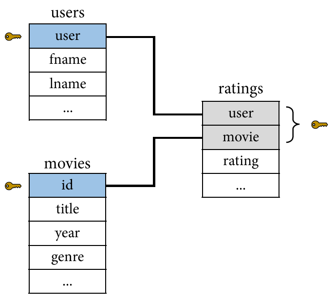
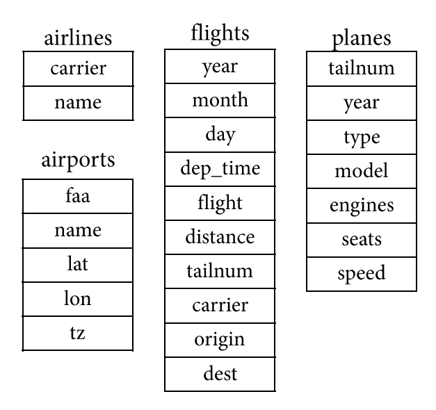
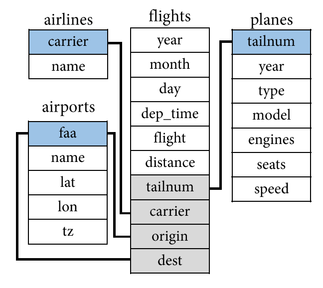
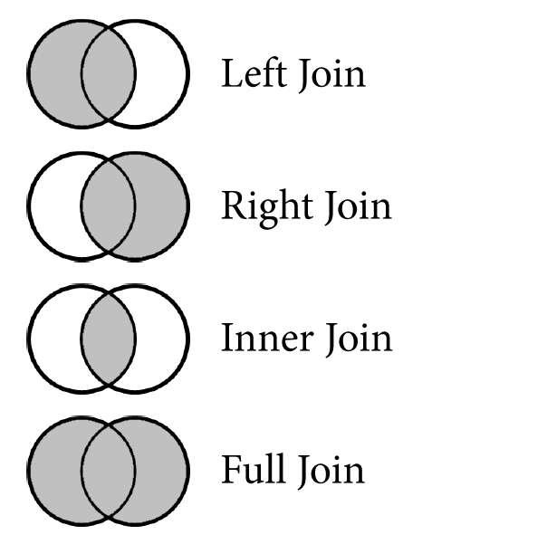

| user | movie | rating |
|---|---|---|
| sing.it.sam | 1 | ★☆☆☆☆ |
| sing.it.sam | 2 | ★★★★★ |
| macattack | 1 | ★★★★☆ |
| macattack | 2 | ★★☆☆☆ |
| inzain99 | 1 | ★★★☆☆ |
| inzain99 | 2 | ★★☆☆☆ |
Foundations of
Data Science
Spring 2026 | Data 2 (399)
Jeffrey M. Girard | Lecture 11c

Roadmap
Understand the principles of relational data and keys
Conceptually differentiate mutating join types
Perform joins in R using {dplyr} functions
Relational Data
Relational Data
- A set of inter-related tables is called a relational database (RDB)
ratings
users
| user | fname | lname |
|---|---|---|
| sing.it.sam | Sam | Jones |
| macattack | Alex | Mackey |
| inzain99 | Zain | Baker |
movies
| id | title | year | genre |
|---|---|---|---|
| 1 | John Wick 2 | 2017 | Action |
| 2 | Frozen II | 2019 | Family |
Relational Data
- To join the tables into one unified dataset, we need to know their connections
| user | fname | lname | movie | title | year | genre | rating |
|---|---|---|---|---|---|---|---|
| sing.it.sam | Sam | Jones | 1 | John Wick 2 | 2017 | Action | ★☆☆☆☆ |
| sing.it.sam | Sam | Jones | 2 | Frozen II | 2019 | Family | ★★★★★ |
| macattack | Alex | Mackey | 1 | John Wick 2 | 2017 | Action | ★★★★☆ |
| macattack | Alex | Mackey | 2 | Frozen II | 2019 | Family | ★★☆☆☆ |
| inzain99 | Zain | Baker | 1 | John Wick 2 | 2017 | Action | ★★★☆☆ |
| inzain99 | Zain | Baker | 2 | Frozen II | 2019 | Family | ★★☆☆☆ |
Keys
- Data is relational when one observation references another observation
- Each observation needs to be uniquely identified by one or more variables
- These variables are called “keys”
- Natural keys are meaningful
- e.g.,
users$user
- e.g.,
- Surrogate keys are meaningless
- e.g.,
movies$id
- e.g.,
- The ratings table has a double-key

Complex Databases
- Let’s try to guess the connections for the {nycflights13} package’s tables


Basic Join Types
Basic Join Types
- The basic joins handle non-overlapping or missing observations differently
movies
| movie | year |
|---|---|
| 1 | 2020 |
| 2 | 2003 |
| 3 | 2019 |
| 4 | 2006 |
| 5 | 2003 |
| 6 | 2002 |
avg_ratings
| movie | average |
|---|---|
| 2 | 2.2 |
| 3 | 8.0 |
| 4 | 6.7 |
| 5 | 8.7 |
| 6 | 3.5 |
| 7 | 7.5 |

Left Join
- Left join includes all rows in the [left] table; those missing in the [right] table get NA
movies
| movie | year |
|---|---|
| 1 | 2020 |
| 2 | 2003 |
| 3 | 2019 |
| 4 | 2006 |
| 5 | 2003 |
| 6 | 2002 |
avg_ratings
| movie | average |
|---|---|
| 2 | 2.2 |
| 3 | 8.0 |
| 4 | 6.7 |
| 5 | 8.7 |
| 6 | 3.5 |
| 7 | 7.5 |
Left Join (movies, avg_ratings)
| movie | year | average |
|---|---|---|
| 1 | 2020 | NA |
| 2 | 2003 | 2.2 |
| 3 | 2019 | 8.0 |
| 4 | 2006 | 6.7 |
| 5 | 2003 | 8.7 |
| 6 | 2002 | 3.5 |
Right Join
- Right join includes all rows in the [right] table; those missing in the [left] table get NA
movies
| movie | year |
|---|---|
| 1 | 2020 |
| 2 | 2003 |
| 3 | 2019 |
| 4 | 2006 |
| 5 | 2003 |
| 6 | 2002 |
avg_ratings
| movie | average |
|---|---|
| 2 | 2.2 |
| 3 | 8.0 |
| 4 | 6.7 |
| 5 | 8.7 |
| 6 | 3.5 |
| 7 | 7.5 |
Right Join (movies, avg_ratings)
| movie | year | average |
|---|---|---|
| 2 | 2003 | 2.2 |
| 3 | 2019 | 8.0 |
| 4 | 2006 | 6.7 |
| 5 | 2003 | 8.7 |
| 6 | 2002 | 3.5 |
| 7 | NA | 7.5 |
Inner Join
- Inner join includes only rows present in both the [left] and [right] tables; no new NAs
movies
| movie | year |
|---|---|
| 1 | 2020 |
| 2 | 2003 |
| 3 | 2019 |
| 4 | 2006 |
| 5 | 2003 |
| 6 | 2002 |
avg_ratings
| movie | average |
|---|---|
| 2 | 2.2 |
| 3 | 8.0 |
| 4 | 6.7 |
| 5 | 8.7 |
| 6 | 3.5 |
| 7 | 7.5 |
Inner Join (movies, avg_ratings)
| movie | year | average |
|---|---|---|
| 2 | 2003 | 2.2 |
| 3 | 2019 | 8.0 |
| 4 | 2006 | 6.7 |
| 5 | 2003 | 8.7 |
| 6 | 2002 | 3.5 |
Full Join
- Full join includes all rows in either the [left] or [right] table; missing values become NAs
movies
| movie | year |
|---|---|
| 1 | 2020 |
| 2 | 2003 |
| 3 | 2019 |
| 4 | 2006 |
| 5 | 2003 |
| 6 | 2002 |
avg_ratings
| movie | average |
|---|---|
| 2 | 2.2 |
| 3 | 8.0 |
| 4 | 6.7 |
| 5 | 8.7 |
| 6 | 3.5 |
| 7 | 7.5 |
Full Join (movies, avg_ratings)
| movie | year | average |
|---|---|---|
| 1 | 2020 | NA |
| 2 | 2003 | 2.2 |
| 3 | 2019 | 8.0 |
| 4 | 2006 | 6.7 |
| 5 | 2003 | 8.7 |
| 6 | 2002 | 3.5 |
| 7 | NA | 7.5 |
Tidyverse Joins
Tidyverse Joins
- {dplyr} has intuitive, standard names for these concepts
left_join(x, y, by)right_join(x, y, by)inner_join(x, y, by)full_join(x, y, by)
- It is easiest if the key variables have the same names in both tibbles
- e.g.,
by = "carrier" - e.g.,
by = c("user", "movie")
- e.g.,
- But you can join by differently named keys too
- e.g.,
by = join_by(faa == origin)
- e.g.,
Preparing our Data
Let’s examine a subset of columns from flights.
# A tibble: 336,776 × 7
month day flight origin dest tailnum carrier
<int> <int> <int> <chr> <chr> <chr> <chr>
1 1 1 1545 EWR IAH N14228 UA
2 1 1 1714 LGA IAH N24211 UA
3 1 1 1141 JFK MIA N619AA AA
4 1 1 725 JFK BQN N804JB B6
5 1 1 461 LGA ATL N668DN DL
# ℹ 336,771 more rowsThe Airlines Dataset
Before we join, let’s look at the airlines dataset.
Left Join in R
Question: What is the full name of the airline carrier for each flight?
A left join is perfect for looking up and adding reference information to our primary dataset. Notice that the number of rows remains exactly the same.
# A tibble: 336,776 × 8
month day flight origin dest tailnum carrier name
<int> <int> <int> <chr> <chr> <chr> <chr> <chr>
1 1 1 1545 EWR IAH N14228 UA United Air Lines Inc.
2 1 1 1714 LGA IAH N24211 UA United Air Lines Inc.
3 1 1 1141 JFK MIA N619AA AA American Airlines Inc.
4 1 1 725 JFK BQN N804JB B6 JetBlue Airways
5 1 1 461 LGA ATL N668DN DL Delta Air Lines Inc.
# ℹ 336,771 more rowsThe Airports Dataset
Next, let’s select a few columns from airports.
Joining by Different Names
If the key variables are named differently across datasets, we provide by with the join_by() function. The order should match first == second.
# A tibble: 336,776 × 8
month day flight origin dest tailnum carrier name
<int> <int> <int> <chr> <chr> <chr> <chr> <chr>
1 1 1 1545 EWR IAH N14228 UA Newark Liberty Intl
2 1 1 1714 LGA IAH N24211 UA La Guardia
3 1 1 1141 JFK MIA N619AA AA John F Kennedy Intl
4 1 1 725 JFK BQN N804JB B6 John F Kennedy Intl
5 1 1 461 LGA ATL N668DN DL La Guardia
# ℹ 336,771 more rowsDuplicate Column Names
We now have the name.x (origin) and name.y (dest)…
# A tibble: 336,776 × 9
month day flight origin dest tailnum carrier name.x name.y
<int> <int> <int> <chr> <chr> <chr> <chr> <chr> <chr>
1 1 1 1545 EWR IAH N14228 UA Newark Liberty Intl George Bu…
2 1 1 1714 LGA IAH N24211 UA La Guardia George Bu…
3 1 1 1141 JFK MIA N619AA AA John F Kennedy Intl Miami Intl
4 1 1 725 JFK BQN N804JB B6 John F Kennedy Intl <NA>
5 1 1 461 LGA ATL N668DN DL La Guardia Hartsfiel…
# ℹ 336,771 more rowsChanging the Suffixes
We can replace “.x” and “.y” using suffix in the second join.
# A tibble: 336,776 × 9
month day flight origin dest tailnum carrier name_origin name_dest
<int> <int> <int> <chr> <chr> <chr> <chr> <chr> <chr>
1 1 1 1545 EWR IAH N14228 UA Newark Liberty Intl George Bu…
2 1 1 1714 LGA IAH N24211 UA La Guardia George Bu…
3 1 1 1141 JFK MIA N619AA AA John F Kennedy Intl Miami Intl
4 1 1 725 JFK BQN N804JB B6 John F Kennedy Intl <NA>
5 1 1 461 LGA ATL N668DN DL La Guardia Hartsfiel…
# ℹ 336,771 more rowsThe Planes Dataset
Finally, let’s select a few columns from planes.
# A tibble: 3,322 × 3
tailnum manufacturer model
<chr> <chr> <chr>
1 N10156 EMBRAER EMB-145XR
2 N102UW AIRBUS INDUSTRIE A320-214
3 N103US AIRBUS INDUSTRIE A320-214
4 N104UW AIRBUS INDUSTRIE A320-214
5 N10575 EMBRAER EMB-145LR
# ℹ 3,317 more rowsMissing Matches
If flights2 has a key that does not exist in the right dataset, the joined variables become NA. Let’s look at plane “N3ALAA” to see this in action.
# A tibble: 63 × 9
month day flight origin dest tailnum carrier manufacturer model
<int> <int> <int> <chr> <chr> <chr> <chr> <chr> <chr>
1 1 1 301 LGA ORD N3ALAA AA <NA> <NA>
2 1 2 353 LGA ORD N3ALAA AA <NA> <NA>
3 1 3 301 LGA ORD N3ALAA AA <NA> <NA>
4 1 7 359 LGA ORD N3ALAA AA <NA> <NA>
5 1 8 1351 JFK ORD N3ALAA AA <NA> <NA>
# ℹ 58 more rowsInner Join in R
Question: Which flights were flown by planes that we have registry data for?
To only return rows that have a match in both tables, use inner join. Our row count will decrease because it drops flights with missing plane data.
# A tibble: 284,170 × 9
month day flight origin dest tailnum carrier manufacturer model
<int> <int> <int> <chr> <chr> <chr> <chr> <chr> <chr>
1 1 1 1545 EWR IAH N14228 UA BOEING 737-824
2 1 1 1714 LGA IAH N24211 UA BOEING 737-824
3 1 1 1141 JFK MIA N619AA AA BOEING 757-223
4 1 1 725 JFK BQN N804JB B6 AIRBUS A320-232
5 1 1 461 LGA ATL N668DN DL BOEING 757-232
# ℹ 284,165 more rowsRight Join in R
Question: Which airports in our data received zero flights from NYC in 2013?
A right join is useful when we want to keep all observations from a reference table on the right without breaking the flow of our code.
# A tibble: 1,357 × 2
dest name
<chr> <chr>
1 04G Lansdowne Airport
2 06A Moton Field Municipal Airport
3 06C Schaumburg Regional
4 06N Randall Airport
5 09J Jekyll Island Airport
# ℹ 1,352 more rowsFull Join in R
Question: Overall, how many flights went to unlisted airports, and how many listed airports received zero flights?
A full join keeps all rows from both tables. By joining flights with airports, we can audit the overlaps and missing matches across our entire database.